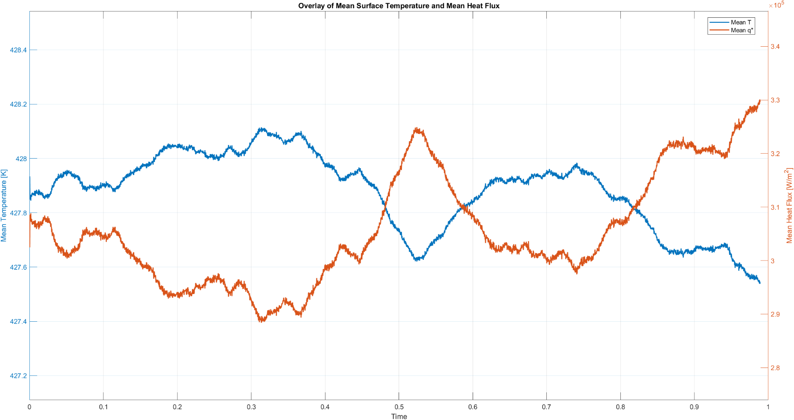
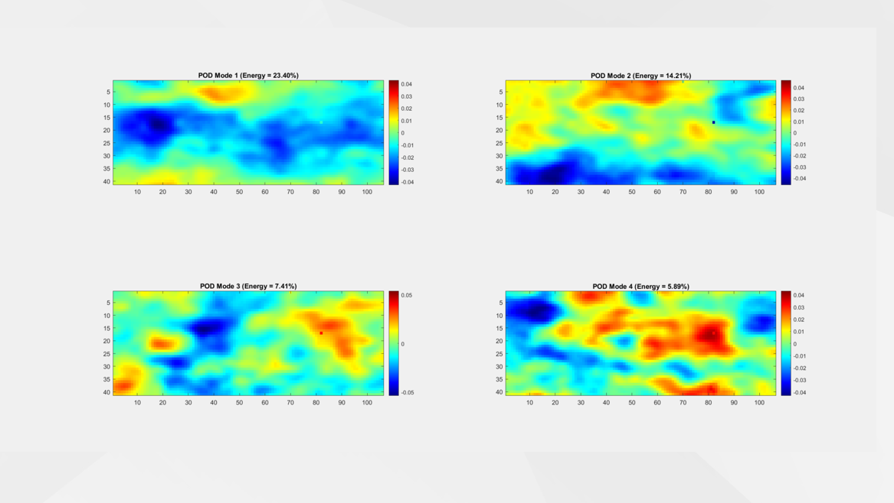

The problem
Boiling is one of the most effective ways to remove heat, and underpins power generation, electronics cooling, refrigeration and nuclear thermal management. Yet it remains notoriously hard to predict: classical correlations (Rohsenow, Kandlikar) and mechanistic models (Zuber) are interpretable but were built for averaged, steady-state conditions and lose accuracy outside their calibration range. Modern high-speed infrared thermography now produces rich, spatially and temporally resolved temperature fields that these averaged correlations simply cannot exploit.
My project asked a focused question: can data-driven methods predict local boiling heat flux directly from transient infrared temperature measurements?
The dataset
I worked with experimental high-speed IR thermography of a flow-boiling setup, stored as a four-dimensional temperature matrix [51 × 116 × 11 × 4043] plus a surface heat-flux field. After extracting the heater surface, cropping edge distortions and removing a sensor glitch, the cleaned dataset contained 17,384,000 pixel-time samples across 4,000 time steps spanning one second of boiling.

Method
1 · Reduced-order analysis
The raw field is far too high-dimensional to model directly, so I applied Proper Orthogonal Decomposition (POD) via singular value decomposition to extract the dominant spatial modes and their temporal coefficients. The first 5 modes captured 55% of the fluctuation energy and the first 40 captured 90%. Critically, when I paired each temperature mode with its heat-flux counterpart, their temporal coefficients were strongly correlated (mode 1 r = 0.98, mode 2 r = 0.97, mode 5 r = 0.96) — evidence that POD was capturing real, transferable physics.
I also implemented Dynamic Mode Decomposition (DMD), built on the Koopman operator, training a reduced-order linear model on the first 2,800 frames to forecast the heat-flux evolution over the following 1,200.

2 · Three neural networks of increasing sophistication
- Model A — baseline: raw temperature as the single input, to test how far temperature alone goes.
- Model B — physics-informed features: temperature plus spatial and temporal temperature gradients, motivated directly by the heat-flux equation.
- Model C — reduced-order modal: the five highest-energy temperature POD modes mapped to the five heat-flux POD modes, then reconstructed back into a full heat-flux field.
Hyperparameters for every model were tuned with Bayesian optimisation rather than brute-force search, and each was trained on a 70:30 train/test split with R², MAE and RMSE reported on both sets.
Results
| Method | Test R² | MAE (W/m²) | RMSE (W/m²) |
|---|---|---|---|
| Linear baseline (T → q) | 0.433 | — | — |
| Dynamic Mode Decomposition | 0.384 | 30,525 | 39,144 |
| Model A — raw temperature | 0.488 | 28,201 | 35,676 |
| Model B — + gradient features | 0.490 | 27,792 | 35,639 |
| Model C — POD modal mapping | 0.729 | 20,656 | 25,959 |
Key insight
Adding hand-crafted gradient features (Model B) barely improved on raw temperature and even showed mild overfitting (train R² 0.60 vs test 0.49). Model C, by contrast, showed essentially no train–test gap. Working in the reduced POD space naturally constrained the network to the physically dominant structures rather than noise — so the reduced-order representation captured the temperature-to-heat-flux relationship far more effectively than feeding the network more raw inputs. Smarter features beat more features.
Use of AI in development
I'm transparent about how I work: I used large-language-model tools (primarily ChatGPT and Claude) to accelerate the code development — debugging and explaining MATLAB and Python for the POD/DMD routines, feature construction, Bayesian optimisation and plotting. The generated code was never used unedited; I adapted it to the dataset and methodology, and every design decision — the algorithms, the input features, the choice of Bayesian optimisation, and the interpretation and validation of results — was my own. Using AI as a capable assistant while staying the engineer in charge is, I think, exactly the skill the field is moving towards.
What I took from it
- End-to-end ownership of a large experimental dataset: preprocessing, validation, reduced-order modelling and ML.
- Linear-algebra-heavy methods (SVD, POD, DMD / Koopman) implemented from the mathematics up in MATLAB and Python.
- Rigorous, honest evaluation — multiple baselines, separate train/test metrics, and diagnosing overfitting rather than just quoting the best number.
- Connecting statistical results back to thermophysics to argue why a model worked, not just that it did.